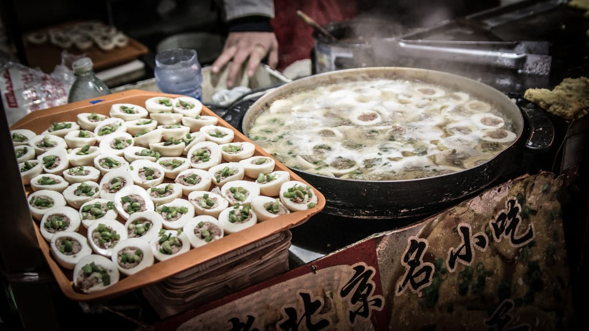
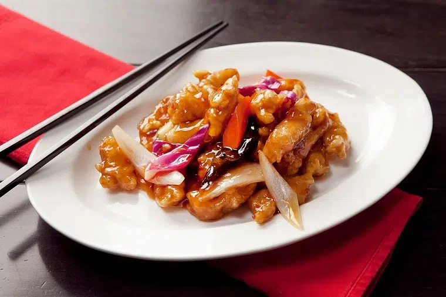
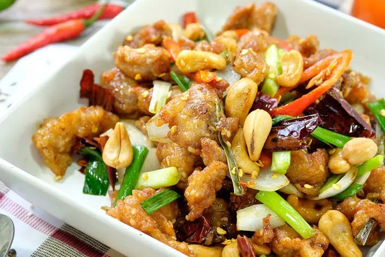

Mapo Tofu, típico da província de Sichuan. Feito com tofu macio, carne moída e muito molho picante, ele representa bem o sabor “málà” — combinação de picância com dormência provocada pela pimenta de Sichuan

O nome em chinês é 糖醋里脊, mas o mundo conhece esse prato como Sweet and Sour Pork – o que significa carne de porco agridoce, em bom português. Esse é um dos pratos mais tradicionais e difundidos da China,

Frango em pedacinhos, amendoim, óleo de gergelim, temperos e pimentas formam o Kung Pao, um prato que nasceu em Sichuan, estado da região central da China, e que se espalhou pelo país e pelo mundo